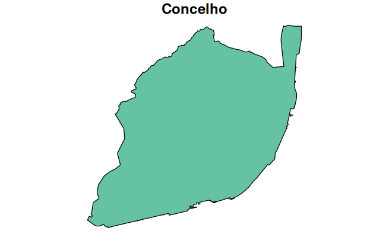
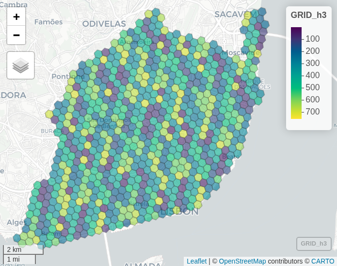
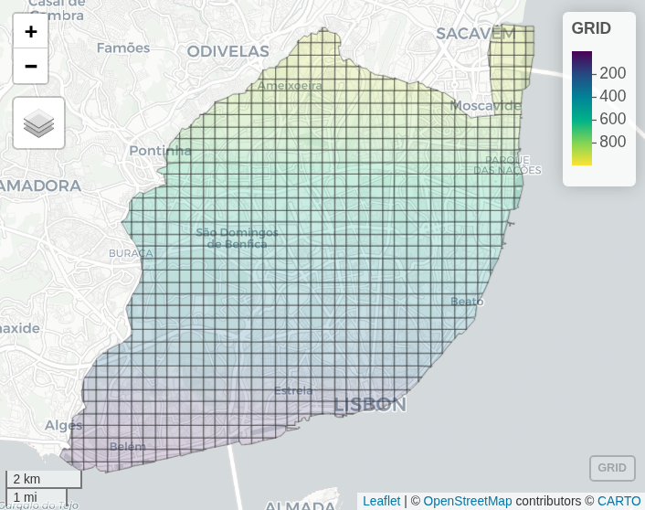
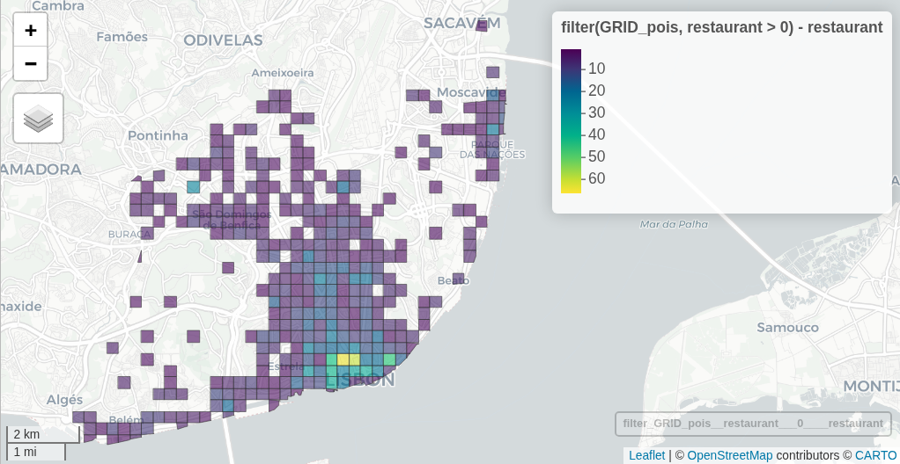
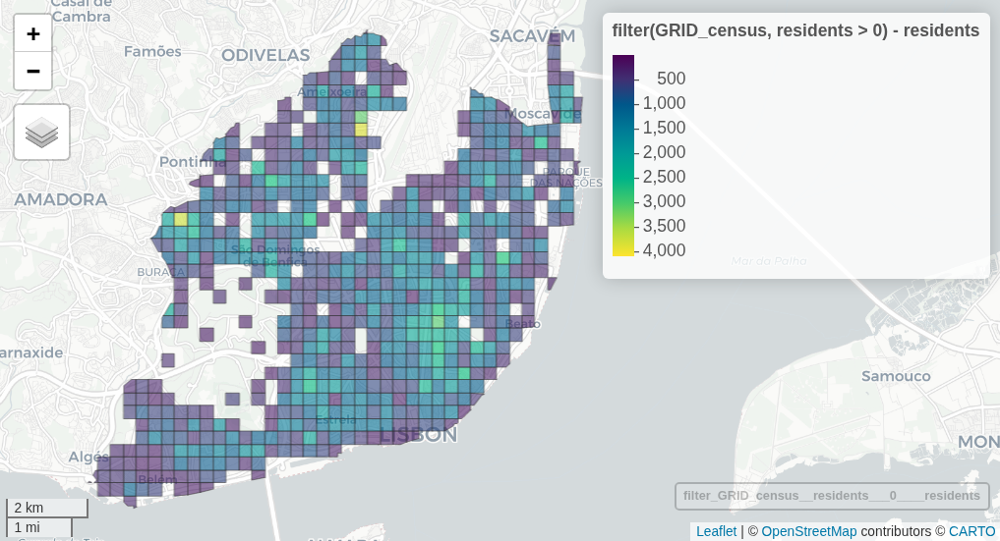
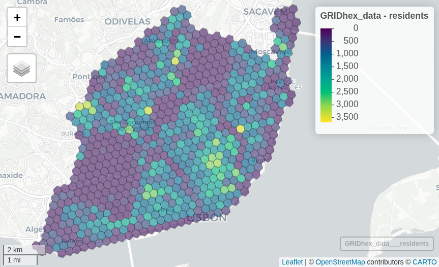

library(sf)
library(tidyverse)
library(mapview)
city_limit = st_read("data/Lisbon/Lisboa_lim.gpkg")
plot(city_limit)POIs and Grids
Points of Interest
OpenStreetMap
From OSM we can export several different opportunities to use on routing and accessibility exercises.
For instance, the 15-min city idea follows the Flowers of Proximity, to categorize the opportinities in 7 different categories, based on Büttner et al. (2022).

For the Streets4All project, and SiteSelection package (Rosa Félix and Gabriel Valença 2024), we divided in:
- Amenities
- Healthcare
- Leisure
- Shop
- Sport
- Tourism
Hot export tool
Using the HOT Export Tool, you can select a few categories, and export as .gpkg or .geojson.
Select 6 to 8 categories
For instance: schools, hospitals, ATMs, parks, supermarkets, and restaurants.
Your further analysis will be made by comparing the categories you selected and exported.
Script
More flexible approach, but requires more codding 🧑💻
See the script we did for all Portugal, and the dataset for Lisbon (2024): data_extract.R (line 146)
You can explore other OpenStreetMap categories at their Wiki.
Grids
You may want to use the original census units, or create a squared oh hexagonal grid.
- Create a grid
- Match all the Census and POIs to that grid
Create a grid
We will use the city of Lisbon as example

Hexagonal using h3jsr
Make an hexagonal grid that covers the city polygon, using the universal H3 grid.
library(h3jsr)
# Resolution: https://h3geo.org/docs/core-library/restable/
# h3_res = 10 # 150m diameter
h3_res = 9 # 400m diameter
# h3_res = 8 # 1060m diameter
GRID_h3 = city_limit |>
polygon_to_cells(res = h3_res, simple = FALSE)
GRID_h3 = GRID_h3$h3_addresses |>
cell_to_polygon(simple = FALSE)
GRID_h3 = GRID_h3 |>
mutate(id = seq(1:nrow(GRID_h3))) # give an ID to each cell
h3_index = GRID_h3 |> st_drop_geometry() # save h3_address for later
mapview(GRID_h3)
Squared
Make a squared grid that covers the city polygon
GRID = city_limit |>
st_transform(crs = 3857) |> # to a projected crs
st_make_grid(cellsize = 400, # meters, we are using a projected crs
what = "polygons",
square = TRUE) |> # if FALSE, hexagons
st_sf() |> # from list to sf
st_transform(crs = 4326) |> # back to WGS84
st_intersection(city_limit$geom) # crop (optional)
GRID = GRID |>
rename(geometry = st_make_grid.st_transform.city_limit..crs...3857...cellsize...400..) |>
mutate(id = c(1:nrow(GRID))) # just to give an ID to each cell
mapview(GRID, alpha.regions = 0.2)
Tip
You should stick with just one of them: squares or hexagons.
Areas with information
Now, we can associate these areas (and their centroids) with all the information we want.
With POIs
# Points of interest from script
POIs = st_read("https://github.com/U-Shift/Traffic-Simulation-Models/releases/download/2025/POIs_Lx.gpkg")Code for squares
# count points by type in areas
GRID_pois = POIs |> st_join(GRID, join = st_within)
counts_group = GRID_pois |>
st_drop_geometry() |> # drop geometry for counting
group_by(id, group) |>
summarise(n = n(), .groups = "drop") |>
tidyr::pivot_wider(names_from = group, values_from = n, values_fill = 0)
counts_type = GRID_pois |>
st_drop_geometry() |>
group_by(id, type) |> # too many types!
summarise(n = n(), .groups = "drop") |>
tidyr::pivot_wider(names_from = type, values_from = n, values_fill = 0)
GRID_pois = GRID |>
left_join(counts_group, by = "id") |>
# left_join(counts_type, by = "id") |> # too many
mutate(across(where(is.numeric), ~replace_na(.x, 0)))
mapview(GRID_pois, zcol = "restaurant") # for instance
The result is a grid with too many columns (one for each type). Consider using only the group.
With Census
# Census data
census = st_read("https://github.com/U-Shift/Traffic-Simulation-Models/releases/download/2025/Censos_Lx.gpkg")
# count points by type in areas
GRID_census = census |> st_join(GRID, join = st_within)
census_density = GRID_census |>
st_drop_geometry() |> # drop geometry for counting
group_by(id.y) |>
summarise(buildings = sum(buildings),
families = sum(families),
residents = sum(residents)) |>
rename(id = id.y) |>
filter(!is.na(id))
GRID_census = GRID |>
left_join(census_density, by = "id") |>
mutate(across(where(is.numeric), ~replace_na(.x, 0)))
mapview(GRID_census, zcol = "residents")
All together
GRID_data = GRID_census |> left_join(GRID_pois |> st_drop_geometry())The same for Hex grid
Code for Hexagons
# POIs
GRIDhex_pois = POIs |> st_join(GRID_h3, join = st_within)
counts_group = GRIDhex_pois |>
st_drop_geometry() |> # drop geometry for counting
group_by(id, group) |>
summarise(n = n(), .groups = "drop") |>
tidyr::pivot_wider(names_from = group, values_from = n, values_fill = 0)
GRIDhex_pois = GRID_h3 |>
left_join(counts_group, by = "id") |>
mutate(across(where(is.numeric), ~replace_na(.x, 0)))
# Census
GRIDhex_census = census |> st_join(GRID_h3, join = st_within)
census_density = GRIDhex_census |>
st_drop_geometry() |> # drop geometry for counting
group_by(id.y) |>
summarise(buildings = sum(buildings),
families = sum(families),
residents = sum(residents)) |>
rename(id = id.y) |>
filter(!is.na(id))
GRIDhex_census = GRID_h3 |>
left_join(census_density, by = "id") |>
mutate(across(where(is.numeric), ~replace_na(.x, 0)))
# All together now
GRIDhex_data = GRIDhex_census |> left_join(GRIDhex_pois |> st_drop_geometry())
mapview(GRIDhex_data, zcol = "residents")
Centroid coordinates
We may want to have this information as points, for instance for routing to opportunities.
# hexagons
POINTShex = GRIDhex_data |>
st_centroid()
GRIDhex_data = GRIDhex_data |>
mutate(lon = st_coordinates(POINTShex)[,1],
lat = st_coordinates(POINTShex)[,2])
# squares
POINTSsq = GRID_data |>
st_centroid()
GRID_data = GRID_data |>
mutate(lon = st_coordinates(POINTSsq)[,1],
lat = st_coordinates(POINTSsq)[,2])Don’t forget to save your data, this will be very useful for the next exercises.
saveRDS(GRID_data, "data/Lisbon/GRIDsq_data.rds")
saveRDS(GRIDhex_data, "data/Lisbon/GRIDhex_data.rds")References
Büttner, Benjamin, Sebastian Seisenberger, María Teresa Baquero Larriva, Ana Graciela Rivas De Gante, Sindi Haxhija, Alba Ramirez, and Bartosz McCormick. 2022. “±15-Minute City: Human-centred planning in action - Mobility for more liveable urban spaces.” Munich: EIT Urban Mobility, Technical University of Munich. https://www.eiturbanmobility.eu/wp-content/uploads/2022/11/EIT-UrbanMobilityNext9_15-min-City_144dpi.pdf.
Rosa Félix, and Gabriel Valença. 2024. SiteSelection: An r Script to Find Complex Areas for the Streets4All Project. https://u-shift.github.io/SiteSelection/.